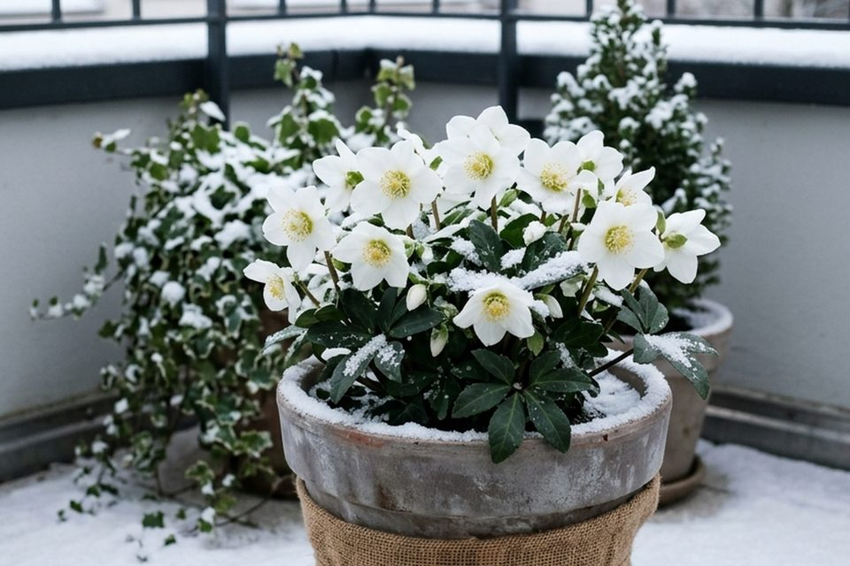

Winterharte Balkonpflanzen: 8 Arten, die Frost aushalten
Der Balkon muss im Winter nicht leer sein. Diese acht Pflanzen kommen auch im Topf durch Frost und Schnee – einige blühen sogar mitten im Winter. Pro Topf zahlst du meist 3–25 €.
Die 8 Pflanzen
1. Christrose (Helleborus niger)
Der Star des Winterbalkons: weiße Blüten von Dezember bis März, auch wenn Schnee liegt. Halbschattig stellen, nicht austrocknen lassen. Giftig – nicht für Haushalte mit knabbernden Haustieren oder kleinen Kindern.
ca. 8–15 €
2. Besenheide und Schneeheide (Calluna, Erica carnea)
Die Klassiker für Balkonkästen. Besenheide färbt im Herbst, Schneeheide blüht von Januar bis April rosa, weiß oder rot. Braucht saure Erde (Rhododendronerde).
ca. 2–4 € pro Topf
3. Efeu (Hedera helix)
Immergrün, verträgt Schatten, wächst über den Kastenrand und füllt Lücken. Auch als Kletterpflanze für grünen Sichtschutz.
ca. 3–6 €
4. Japanische Stechpalme (Ilex crenata)
Sieht aus wie Buchs, als Kugel geschnitten – wird aber nicht vom Buchsbaumzünsler befallen. Ideal für einen ruhigen, grünen Akzent in der Ecke.
ca. 15–25 €
5. Zwergkonifere (z. B. Zwergkiefer, Zuckerhutfichte)
Bleibt klein und kompakt, gibt dem Balkon Struktur und lässt sich im Dezember mit einer Lichterkette schmücken.
ca. 10–20 €
6. Purpurglöckchen (Heuchera)
Wegen der Blätter: rot, karamell, lila oder fast schwarz – auch im Winter. Bringt Farbe neben das viele Grün.
ca. 4–8 €
7. Skimmie (Skimmia japonica)
Kompakter Strauch mit roten Knospen den ganzen Winter, im Frühling duftende Blüten. Mag Halbschatten und saure Erde. Leicht giftig.
ca. 8–15 €
8. Scheinbeere (Gaultheria procumbens)
Kleine, glänzende Blätter und leuchtend rote Beeren von Herbst bis Frühjahr. Perfekt für die vordere Kante eines Balkonkastens.
ca. 3–6 €
Winterschutz: so frieren Töpfe nicht durch
Winterhart heißt im Beet winterhart. Im Topf frieren die Wurzeln schneller, weil die Erde von allen Seiten kalt wird. Mit drei Handgriffen kommen die Pflanzen trotzdem durch:
- Von unten: Töpfe auf Topffüße, ein Holzbrett oder eine Styroporplatte stellen.
- Von der Seite: mit Kokosmatte, Jute oder Luftpolsterfolie umwickeln. Töpfe eng zusammen an die Hauswand stellen.
- Gießen: an frostfreien Tagen ein wenig. Immergrüne vertrocknen im Winter häufiger, als dass sie erfrieren.
Einkaufsliste für eine Winter-Ecke
| Was | Menge | ca. Preis |
|---|---|---|
| Christrose | 1 | 8–15 € |
| Schneeheide / Besenheide | 3 | 6–12 € |
| Efeu | 1 | 3–6 € |
| Skimmie | 1 | 8–15 € |
| Scheinbeere | 2 | 6–12 € |
| Frostfeste Töpfe | 3–4 | 25–50 € |
| Rhododendronerde, 20 l | 1 | 5–8 € |
| Topffüße + Jute oder Kokosmatte | 1 Set | 10–20 € |
Richtwerte für Deutschland, Stand November 2026. Die Preise schwanken je nach Händler und Saison.
Ca. 70–140 € für eine komplette Winter-Ecke mit neuen Töpfen. Mit vorhandenen Töpfen ca. 45–90 €.
Häufige Fragen
Kann ich jetzt im Winter noch pflanzen?
Ja, im Topf schon – solange die Erde nicht gefroren ist. Gärtnereien verkaufen Heide, Christrosen und Skimmien gerade im November und Dezember.
Welche Pflanzen für einen Nordbalkon?
Efeu, Christrose, Skimmie und Scheinbeere kommen gut mit Schatten zurecht. Heide und Zwergkoniferen brauchen mehr Licht.
Passend dazu: Winterbalkon gemütlich machen – 10 Ideen.